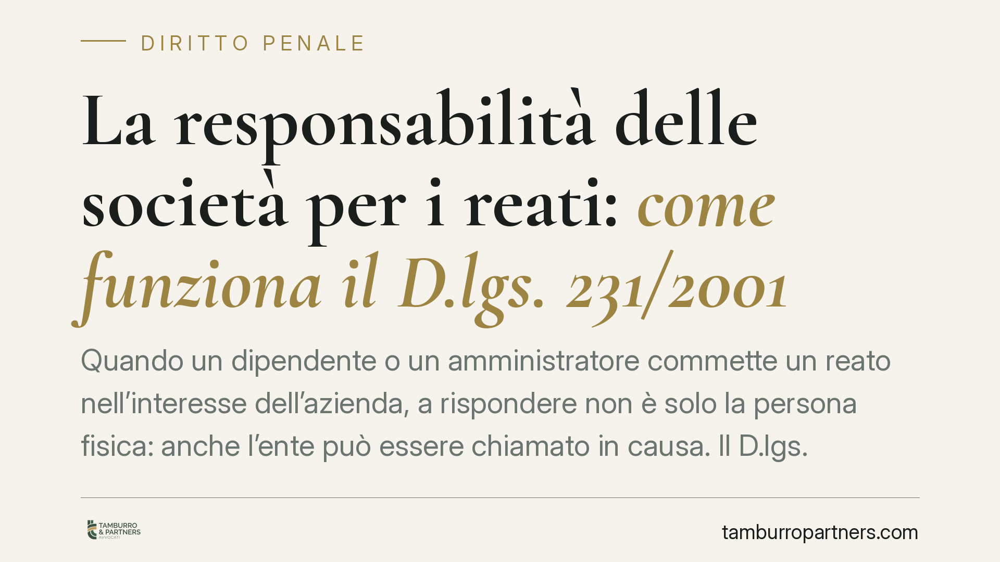

La responsabilità delle società per i reati: come funziona il D.lgs. 231/2001
Quando un dipendente o un amministratore commette un reato nell'interesse dell'azienda, a rispondere non è solo la persona fisica: anche l'ente può essere chiamato in causa. Il D.lgs. 231/2001 disciplina una responsabilità formalmente amministrativa ma accertata nel processo penale. Capire come opera aiuta a prevenirla prima che diventi un problema giudiziario.

Una responsabilità amministrativa accertata nel processo penale
Il D.lgs. 231/2001 ha introdotto nell'ordinamento italiano la responsabilità degli enti per alcuni reati commessi, nel loro interesse o a loro vantaggio, da soggetti in posizione apicale o da sottoposti.
La qualificazione è ibrida. Formalmente la responsabilità è amministrativa, ma il suo accertamento avviene davanti al giudice penale, con le garanzie del processo penale. È un punto che conviene tenere a mente: l'ente non è un semplice terzo chiamato a pagare, ma un soggetto processuale a pieno titolo, con diritto di difesa.
Le sanzioni possono essere pesanti: oltre a quelle pecuniarie, sono previste misure interdittive come il divieto di contrattare con la Pubblica Amministrazione, la sospensione di autorizzazioni, l'interdizione dall'attività.
L'autonomia della responsabilità dell'ente (art. 8)
L'aspetto più delicato è l'autonomia della responsabilità dell'ente rispetto a quella della persona fisica.
L'art. 8, comma 1, D.lgs. 231/2001 stabilisce che l'ente risponde anche quando l'autore del reato non è stato identificato o non è imputabile (lett. a), oppure quando il reato si estingue per una causa diversa dall'amnistia (lett. b).
In concreto: l'azienda può essere condannata anche se il singolo responsabile resta ignoto, o se il reato della persona fisica si prescrive. Non serve una condanna definitiva dell'autore materiale perché scatti la responsabilità dell'ente.
L'eccezione dell'amnistia ha una ragione precisa. Il comma 2 dell'art. 8 consente all'ente di rinunciare all'amnistia: in tal caso può chiedere di essere giudicato, per ottenere un'assoluzione nel merito. È una facoltà difensiva, non un automatismo a suo sfavore.
La prescrizione: un modello più vicino al civile che al penale
Qui serve chiarezza, perché la materia è spesso fraintesa.
L'art. 22, comma 1, fissa un termine di prescrizione di cinque anni dalla data di consumazione del reato.
Il comma 2 individua le cause di interruzione: la richiesta di applicazione di misure cautelari interdittive e la contestazione dell'illecito amministrativo ai sensi dell'art. 59.
Il punto decisivo è il meccanismo che segue l'interruzione, disciplinato dai commi 3 e 4. Il regime non segue la regola penale dell'art. 160 c.p. (nuovo termine, con il limite del massimo prolungabile). Segue invece un modello di impronta civilistica, assimilabile agli artt. 2943-2945 c.c.: quando l'interruzione avviene con la contestazione dell'illecito, la prescrizione non corre più fino al passaggio in giudicato della sentenza che definisce il procedimento.
In pratica, una volta contestato formalmente l'illecito all'ente, il tempo si ferma. Non ricomincia a decorrere un nuovo termine pari al doppio dell'originario: quella è la logica del processo penale ordinario, non quella del sistema 231. Confondere i due regimi porta a valutazioni errate sulle strategie difensive.
Il rappresentante legale imputato (art. 39)
L'ente partecipa al procedimento attraverso il proprio rappresentante legale, salvo che questi sia imputato del reato da cui dipende l'illecito amministrativo.
L'art. 39, comma 1, sancisce infatti un'incompatibilità: chi è imputato del reato presupposto non può rappresentare l'ente nel procedimento 231. La ragione è intuitiva: ci sarebbe un conflitto di interessi, perché la difesa personale dell'amministratore potrebbe divergere da quella dell'azienda.
In questi casi l'ente deve nominare un diverso rappresentante. La giurisprudenza di legittimità ha affrontato più volte le conseguenze processuali di un'eventuale costituzione irregolare, sottolineando l'esigenza di garantire all'ente una difesa effettiva e non condizionata. Si tratta di un profilo da verificare con attenzione nel caso concreto, perché incide sulla validità degli atti.
Perché conta per l'impresa
La responsabilità 231 non è un rischio astratto riservato alle grandi aziende. Riguarda potenzialmente qualsiasi ente dotato di personalità giuridica, comprese società di piccole dimensioni, consorzi e associazioni con attività economica.
L'adozione di un modello di organizzazione e gestione idoneo, se efficacemente attuato, può costituire causa di esonero dalla responsabilità. Non è una garanzia automatica: il modello va costruito sui rischi reali dell'attività e tenuto aggiornato.
Cosa fare in concreto
- Mappate i rischi reato della vostra specifica attività: i reati presupposto variano molto per settore (ambiente, sicurezza sul lavoro, corruzione, reati tributari).
- Adottate e aggiornate un modello organizzativo 231 calibrato sui rischi effettivi, non un documento standard scaricato e archiviato.
- Istituite un Organismo di Vigilanza realmente autonomo e dotato di poteri di controllo.
- Verificate subito la posizione del rappresentante legale in caso di procedimento: se è imputato del reato presupposto, va nominato un diverso rappresentante per l'ente.
- In caso di contestazione, consultate un difensore prima di assumere decisioni sulla strategia processuale, inclusa l'eventuale rinuncia all'amnistia.
---
*Contributo informativo a cura di Tamburro & Partners - Avv. Giuseppe Tamburro. Non costituisce parere legale.*
Ogni condominio ha una storia a sé.
Se gestisci un'amministrazione e vuoi un confronto su una specifica questione condominiale, scrivi allo studio. Ti rispondiamo entro un giorno lavorativo.